Froggy preproduction gallery
One index over everything in this workspace. Start here, then
STATUS.md for what is done and what is next.
Every figure on every board is invented for review. Domains use
.example. Nothing here is live data, provider evidence, advice,
or a claim that a payment route works today — real readiness is in
SERVICES.md.
Boards
Gate C review board →
Mark 128→16, app icon, wordmark, palette, type, buttons, task card,
approval, and a quiet Home.
Gate C approved
Task workspace →
The first vertical slice: structured comparison, browser modes, four
settlement outcomes.
needs-review
Screen families →
Onboarding, Explore, Token detail, Wallet, Background setup,
Connections.
needs-review
Motion states →
The five-state contract, live. Reduced motion, offscreen pause and asset
failure are all switchable.
verified
Brand
mark 96
48
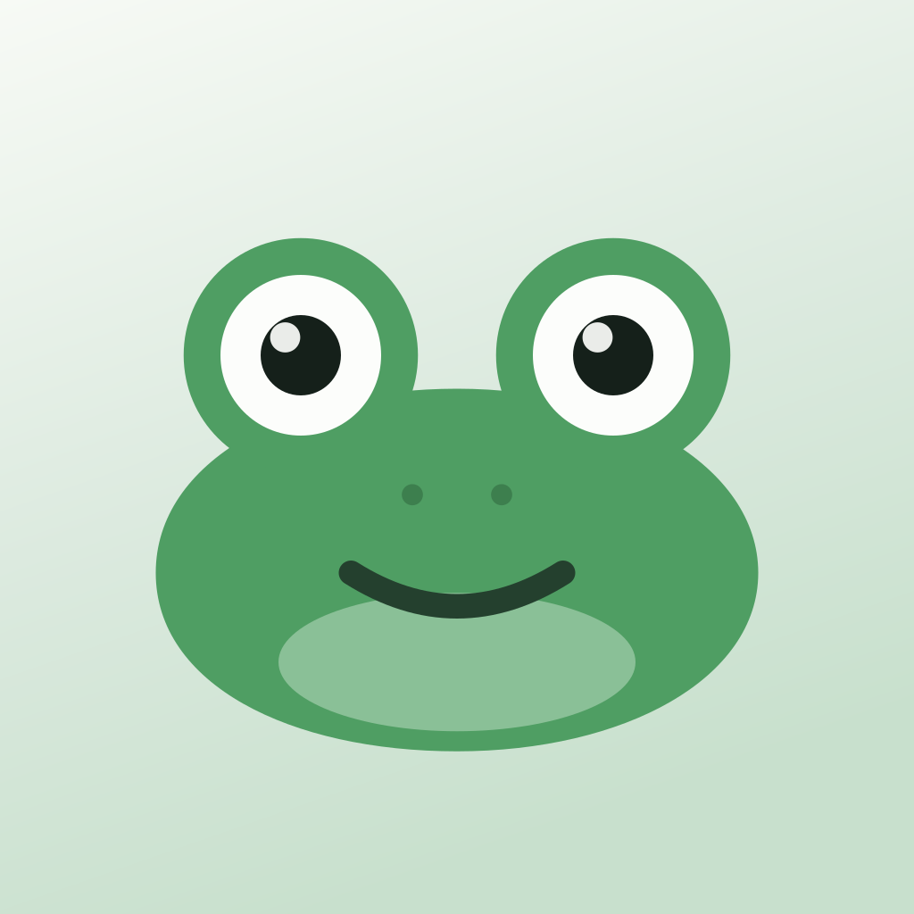
app icon
favicon 32
favicon 16
mono*
leash
stubbed
*The monochrome mark renders black here on purpose. It paints with
currentColor, and an SVG loaded through
<img> has no parent to inherit from. Inline it to get a
colour. See BRAND.md.
Mascot poses
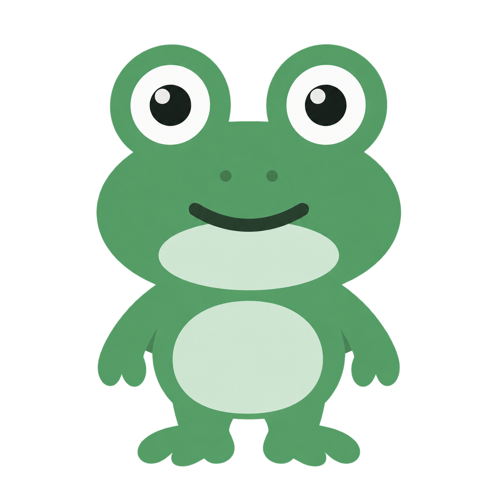
canonical · the master
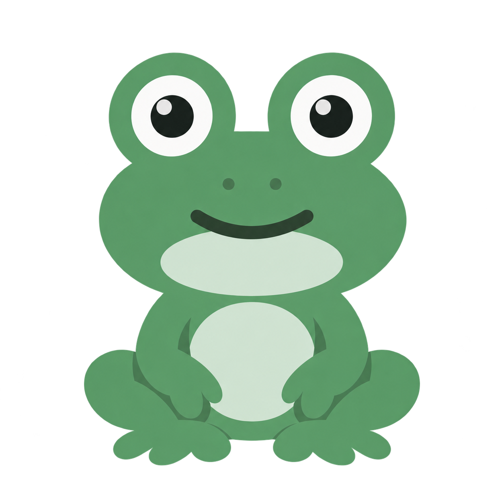
idle · seated, rev 2
research
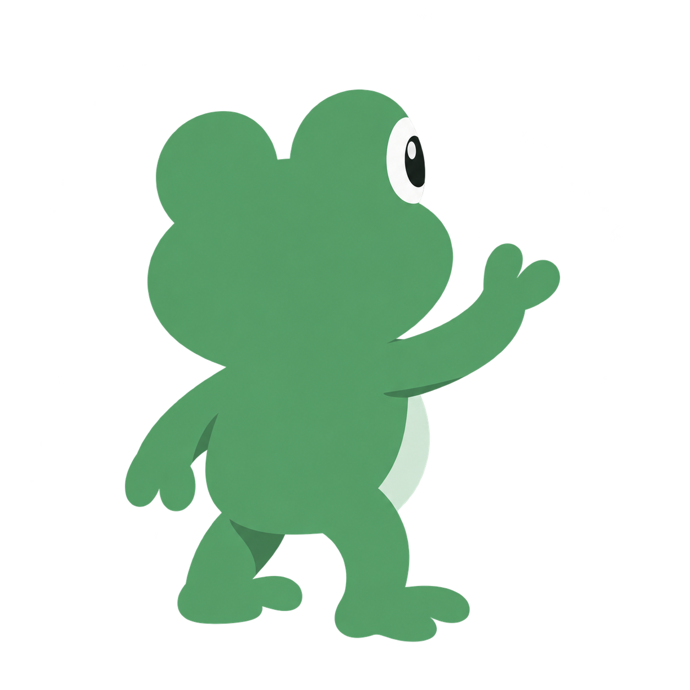
browse
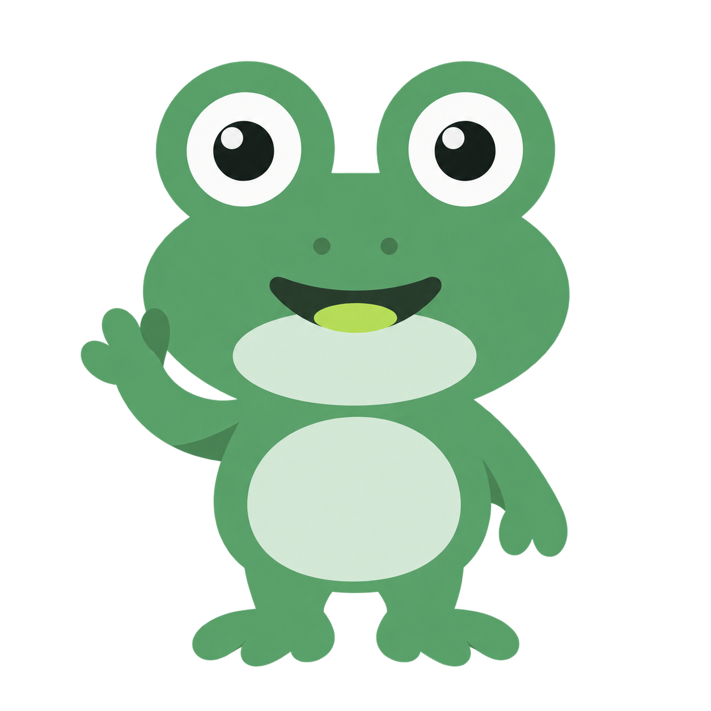
needs-user · lime tongue, rev 2
completion
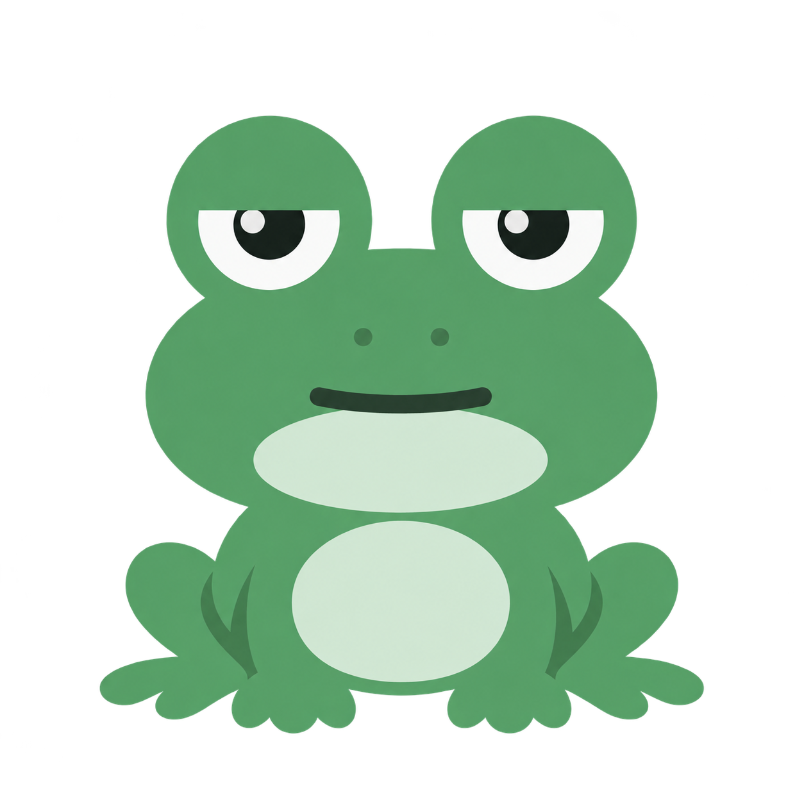
resting
1254×1254 RGBA with a real alpha channel, generated by the owner
from
POSE_PROMPTS.md. Two came back wrong
on the first pass and were re-run: needs-user's tongue was
#e07878 where the palette says lime, and idle was a
standing near-duplicate of canonical
instead of the seated pose. Both are revision 2 and both now check out —
the tongue measures 5,932 lime pixels and no salmon, and idle's widest
point sits 79% down its silhouette, which is what seated looks like when
you measure it rather than eyeball it. One open item: content height still
varies 963–1095px across the set, which shows as the character
growing between states if they swap in place, so a normalised export set
is worth making before they go into the app.
Motion poses — static, as reduced motion shows them
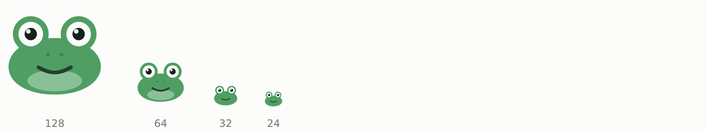
idle · one frame of the loop. Every state, and the reduced-motion
variants, are in
evidence/phase-b/states/
Screens
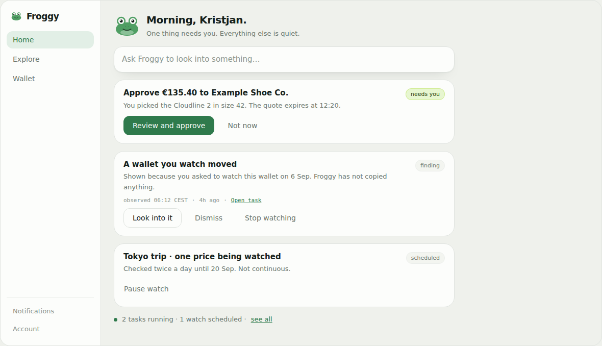
home.desktop · Gate C approved
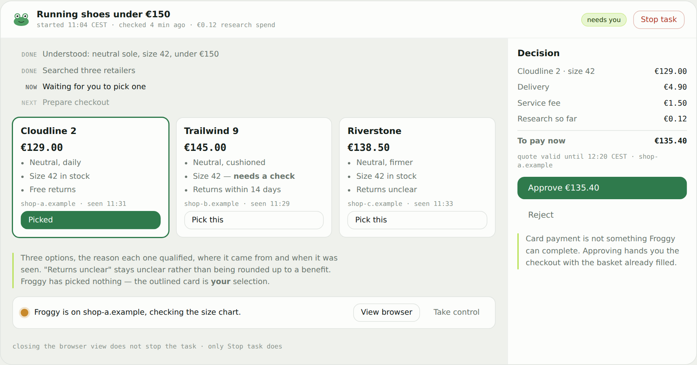
task.shopping · needs-review
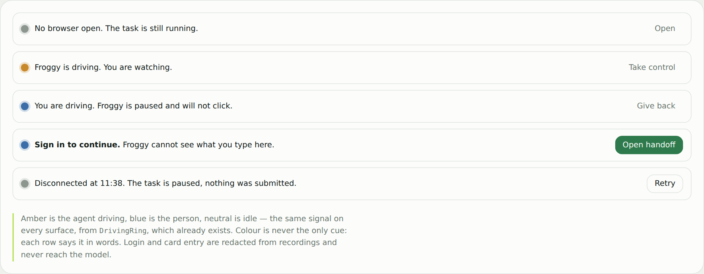
browser.modes · needs-review
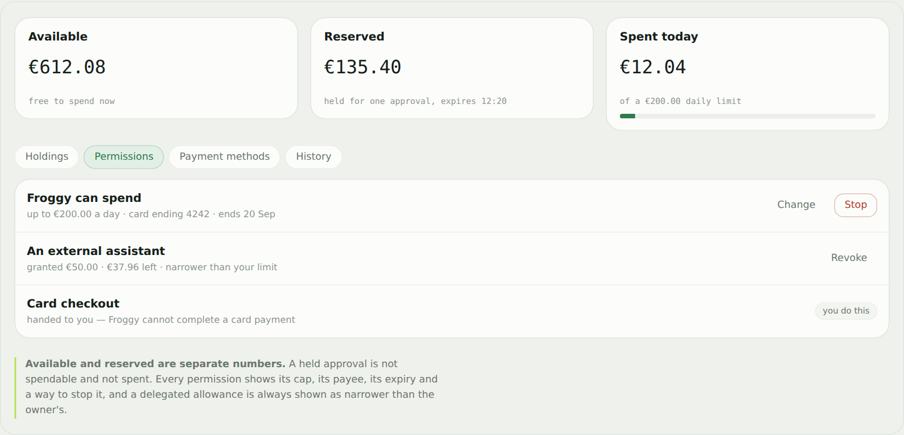
wallet.permissions · needs-review
Records
Asset manifest →
Every asset with checksum, provenance, licence and review status.
Screen manifest →
16 screens across 11 families, each with its fixture and source node.
Motion contract →
Five states, and how the real eight-state TaskStatus maps onto them.
Tokens →
The lime accent and frog roles. Proposed, not yet in the app.
Copy deck →
Onboarding, status, permissions, money, errors, empty states.
Fixtures →
Five simulated scenarios, gated by check-fixtures.mjs.
Reproduce any of it
From the repository root:
node design/preproduction/tools/build-prototype.mjs # regenerate boards from the mark
node design/preproduction/tools/build-prototype.mjs --check # fail if any board is stale
node design/preproduction/tools/state-sweep.mjs out/ # capture and assert every motion state
node design/preproduction/tools/check-fixtures.mjs # gate the simulated data
node design/preproduction/tools/review-shot.mjs <file> out/ # 1440/768/390/320 + reduced motion